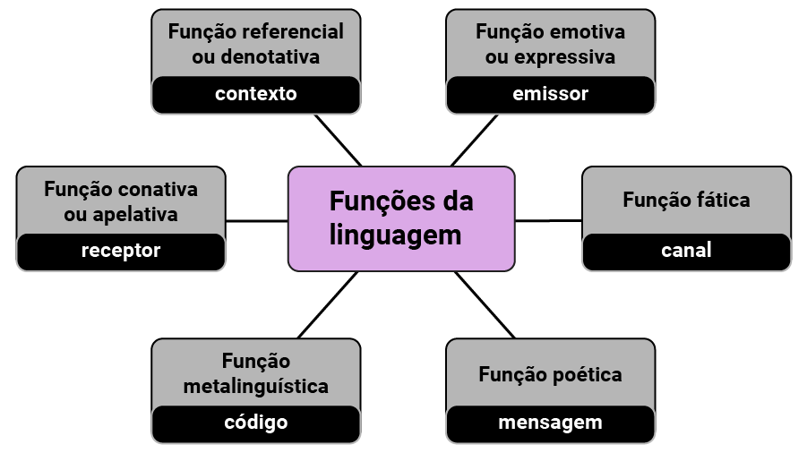
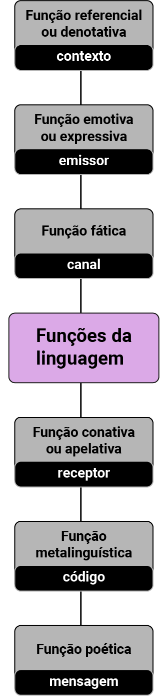

O que são gêneros do discurso?
Linguagens e suas tecnologias
Para o filósofo russo Mikhail Bakhtin (1895-1975), os gêneros do discurso resultam em formas-padrão “relativamente estáveis” de um enunciado, determinadas histórico-socialmente (2016). Segundo o autor, o homem só se comunica, fala e escreve por meio de gêneros do discurso. Inclusive em conversas informais, o discurso é moldado pelo gênero em uso.
Por que esse conceito é importante? No estudo dos tipos de linguagem, percebe-se que a linguagem é adequada ao contexto comunicativo que se está inserido, ou seja, para cada situação, uma forma de comunicação é utilizada, um tipo de gênero do discurso é escolhido para ser compreendido pelo outro. Veja alguns exemplos para entender melhor o conceito de gênero.
Quando você precisou deixar um aviso antes de sair de casa, já deixou um bilhete escrito na geladeira? Então, para deixar esse aviso para algum familiar (e isso é uma situação de comunicação, pois você precisa comunicar algo para alguém), foi utilizada uma linguagem informal que se adapta ao gênero bilhete. Dessa forma, escolhe-se o gênero bilhete para a comunicação com a família (situação comunicativa).
Em uma aula com o professor de educação física, ele explicou sobre como a prática de exercícios físicos é importante para a saúde. Essa aula expositiva, ou seja, oral, é um gênero do discurso, pois o professor adapta a sua fala para que os alunos entendam a relevância do tema para a saúde.
Sobre esse mesmo tema, a professora de artes apresentou a diversidade, explicando como, ao longo da história, o padrão de corpo (ou a estética) mudou conforme a época da sociedade. Para explicar, a professora trouxe um texto, que é um gênero do discurso, já que há uma linguagem específica nele para se entender o tema estudado em aula, que é a situação comunicativa.
A professora de língua inglesa apresentou o tema saúde em um vocabulário com diversas palavras em inglês para que os alunos construíssem frases usando essas palavras, em conjunto com outros conteúdos já estudados. Para essa situação comunicativa, “aula de inglês”, o gênero escolhido foi “vocabulário”. Na aula de literatura, o professor trouxe um poema concreto também sobre o tema saúde.
Fonte: https://br.pinterest.com/fabbiobahiao/poemas-concretos/. Acesso em: 26 fev. 2022.
Portanto, nessa aula (situação comunicativa), o professor de literatura mobilizou o gênero poema concreto para se comunicar com seus alunos. Ainda sobre o tema “saúde”, a professora de língua portuguesa trouxe a propaganda a seguir para a aula.
![Cartaz com uma mulher preta, idosa, com cabelos pretos e curtos, brincos pequenos, vestindo camisa azul e sorrindo. Abaixo, na parte mais central, em um fundo verde, está escrito “previna acidentes” em letras brancas, na linha de baixo, em letras amarelas, está escrito “pessoas idosas têm risco de sofrer quedas graves”. Abaixo desse texto, constam os logotipos das entidades que participam da campanha: Conselho Municipal dos Direitos da Pessoa Idosa, Fundação de Ação Social e Prefeitura de Curitiba. No rodapé do cartaz, há o site da campanha “idososcuritiba.com.br”.](assets/img/07_generos/figura8.png)
Fonte: https://www.curitiba.pr.gov.br/noticias/campanha-alerta-para-a-necessidade-de-protecao-aos-idosos/50159. Acesso em: 26 fev. 2022.
O gênero do discurso “propaganda publicitária” foi mobilizado para o ato comunicativo “aula”, pois, a partir desse gênero, podem ser estudados argumentação, linguagem mista, entre outros conteúdos que se relacionam com língua portuguesa e demais disciplinas.
Não se esqueça: para que a comunicação ocorra e se estabeleça com eficiência, além da situação comunicativa e do gênero do discurso, é necessário entender como se processa a comunicação. Sim, ela é um processo realizado diariamente, e há elementos fundamentais para a sua efetivação. Conheça-os a seguir.
Todos os dias, você comunica algo a alguém, e essa comunicação sempre tem um objetivo. Uma conversa informal, uma palestra, um aviso, uma mensagem nas redes sociais etc., todas essas situações comunicativas têm um objetivo, pois, do contrário, não ocorreriam. Além disso, para que esses gêneros discursivos ocorram, há elementos da comunicação envolvidos.
Na primeira metade do século XX, um grupo de linguistas decidiu investigar as funções que a linguagem cumpria na vida das pessoas. Um desses estudiosos era o linguista russo Roman Jakobson (1896-1982). Ele criou um modelo para descrever a comunicação humana, conhecido como “Modelo comunicativo de Roman Jakobson”, conforme a imagem a seguir.
![Quadro rosa com duas pessoas, sendo uma de pele preta e cabelos pretos, crespos e curtos, blusa azul, olhos fechados e sorrindo; e outra, de cabelos pretos, lisos e curtos, pele clara, brincos amarelos, blusa azul e amarela, na qual aparece o texto “Mundo Educação” e um símbolo com o desenho de várias pessoas. Na parte superior, em letras maiores e brancas, dentro de um círculo vermelho, aparece a frase “ELEMENTOS DA COMUNICAÇÃO” e entre as duas pessoas, escritas em letras brancas, aparecem as palavras “CONTEXTO, MENSAGEM, CANAL e CÓDIGO”. Acima das cabeças de cada uma das pessoas, está escrito em letras brancas, dentro de um círculo azul, na esquerda, a palavra “RECEPTOR” e, na direita, a palavra “EMISSOR”. Há, também, uma linha pontilhada entre as duas pessoas, representando que estão conectadas nesse diálogo.](assets/img/07_generos/infografico2.png)
Segundo Guimarães (2018), de acordo com o modelo comunicativo de Jakobson, em qualquer ato de comunicação humana estão presentes seis elementos:
Clique ou toque para visualizar o conteúdo.
A MENSAGEM
É o conjunto de informações que se quer transmitir.
O EMISSOR OU REMETENTE
Aquele de quem parte a mensagem.
O RECEPTOR OU DESTINATÁRIO
Aquele a quem se destina a mensagem.
O CÓDIGO
Um sistema de signos que o emissor e o receptor precisam compartilhar, total ou parcialmente, para que haja a comunicação.
O CANAL OU CONTATO
O meio físico pelo qual emissor e receptor se comunicam.
O REFERENTE OU CONTEXTO
O assunto da mensagem, aquilo a que ela se refere.
Para Jakobson, a relação entre o modelo descritivo e as funções da linguagem é a seguinte: cada vez que algo é comunicado, a ênfase recai sobre um dos elementos do modelo e, consequentemente, a função relacionada a ele prevalece sobre as outras.
Cada função da linguagem corresponde a um elemento do modelo comunicativo de Jakobson.
 Você finalizou o sétimo conteúdo! Chegou a hora de testar seus conhecimentos! Boa sorte!